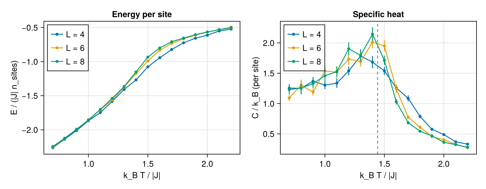
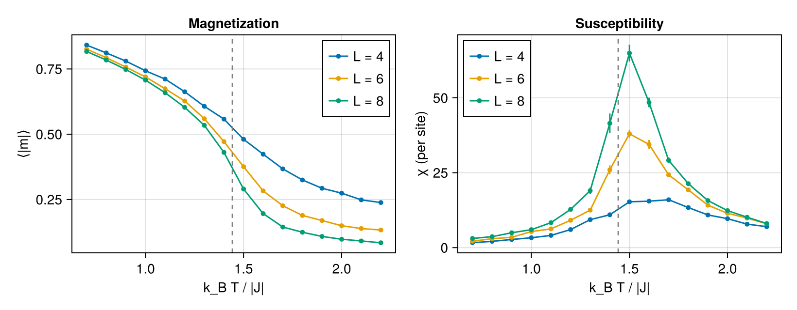
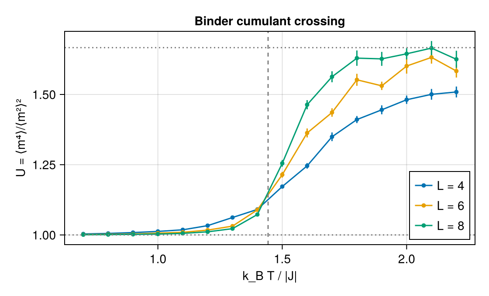
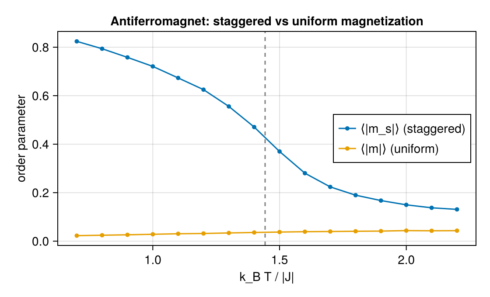

Tutorial — the ferromagnetic transition of a cubic Heisenberg model
This tutorial runs the whole thermodynamics pipeline on a model whose answer is known exactly enough to check: the classical Heisenberg ferromagnet on a simple cubic lattice, whose transition sits at $k_B T_c / |J| \approx 1.443$ (high-precision Monte Carlo literature value). We build a one-coefficient reference model through the same fitted-model surface a production run uses (SLCEModel — in real work you would SLCE.load a fitted file instead), sweep it through the transition with run_mc, and read the physics off the figures: the specific-heat peak, the growth of $|m|$, the susceptibility peak, and the Binder-cumulant crossing.
All numbers and figures on this page are computed when the documentation is built — they cannot drift from the code.
A nearest-neighbor Heisenberg model through the fitted surface
One atom in a cubic cell; the six nearest neighbors are periodic images of that atom, so the pair needs images = AllImages() (a minimum-image basis drops self-image pairs). Cubic symmetry folds all six directed bonds into a single isotropic SALC — one coefficient, our $J$.
using SLCEMonteCarlo, SLCE
import Spglib # activates SLCE's SpglibBackend extension
using LinearAlgebra
lat = Lattice(Matrix(1.0 * I(3)))
cell = Crystal(lat, reshape([0.0, 0.0, 0.0], 3, 1), [1], ["Fe"])
spec = BasisSpec(; nbody = 2, cutoff = 1.1, lmax = [1], soc = false)
basis = SLCEBasis(cell, spec; backend = SpglibBackend(), images = AllImages())
model = SLCEModel(basis, 0.0, [-0.01]) # one SALC; < 0 ⇒ ferromagnetic
(space_group = basis.spacegroup.symbol, n_salc = n_salcs(basis))(space_group = "Pm-3m", n_salc = 1)The physical coupling $J$ (in $E = J\sum_{\langle ij \rangle} \mathbf{e}_i \cdot \mathbf{e}_j$, three bonds per site) is read off the tiled Hamiltonian itself, from the fully aligned configuration — no reliance on internal normalization:
H0 = TiledHamiltonian(model; dims = (4, 4, 4))
aligned = SLCEMonteCarlo.from_matrix(repeat([0.0, 0.0, 1.0], 1, n_sites(H0)))
J = total_energy(H0, aligned) / (3 * n_sites(H0))
kTc = 1.443 * abs(J) # literature transition, for reference lines
(J = J, kTc = kTc)(J = -0.03464101615137765, kTc = 0.04998698630643795)Sweeping through the transition
Three lattice sizes, one annealing ladder each (high → low, warm-started), with one overrelaxation sweep per Metropolis sweep to cut critical slowing down. kT is in the model's energy units throughout (a DFT-fitted model would use temperature = ... in kelvin instead).
kts = abs(J) .* collect(2.2:-0.1:0.7) # k_B T / |J| from 2.2 down to 0.7
sizes = (4, 6, 8)
runs = map(sizes) do L
H = TiledHamiltonian(model; dims = (L, L, L))
run_mc(H; kT = kts, sweeps_therm = 2000, sweeps_measure = 6000,
measure_interval = 3, or_per_metropolis = 1, seed = 7)
endEach MCResult carries, per temperature, the binned means, statistical errors, and integrated autocorrelation times of every observable. Below, curves are drawn with their error bars (often smaller than the markers).
using CairoMakie
CairoMakie.activate!(type = "png")
x = kts ./ abs(J)
stat(r, name) = (getindex.((p.stats[name].mean for p in r.points), 1),
getindex.((p.stats[name].err for p in r.points), 1))Energy and specific heat
The energy per site bends at the transition and the specific heat $C/k_B = (\langle E^2\rangle - \langle E\rangle^2)/(n_\mathrm{sites}\,(k_BT)^2)$ peaks there, sharpening with system size — the classic finite-size signature. The dashed line is the literature $k_BT_c/|J| = 1.443$.
fig = Figure(size = (820, 320))
ax1 = Axis(fig[1, 1]; xlabel = "k_B T / |J|", ylabel = "E / (|J| n_sites)",
title = "Energy per site")
ax2 = Axis(fig[1, 2]; xlabel = "k_B T / |J|", ylabel = "C / k_B (per site)",
title = "Specific heat")
for (L, r) in zip(sizes, runs)
n = L^3
e, ee = stat(r, :energy)
scatterlines!(ax1, x, e ./ (abs(J) * n); label = "L = $L", markersize = 7)
errorbars!(ax1, x, e ./ (abs(J) * n), ee ./ (abs(J) * n))
c, ce = stat(r, :specific_heat)
scatterlines!(ax2, x, c; label = "L = $L", markersize = 7)
errorbars!(ax2, x, c, ce)
end
vlines!(ax2, [1.443]; linestyle = :dash, color = :gray)
axislegend(ax1; position = :lt)
axislegend(ax2; position = :lt)
fig
Magnetization and susceptibility
$\langle|m|\rangle$ rises through the transition (rounded by finite size — on a finite lattice it never vanishes exactly), and the $|m|$-connected susceptibility $\chi = n_\mathrm{sites}(\langle m^2\rangle - \langle|m|\rangle^2)/k_BT$ peaks near $T_c$, growing with $L$.
fig = Figure(size = (820, 320))
ax1 = Axis(fig[1, 1]; xlabel = "k_B T / |J|", ylabel = "⟨|m|⟩",
title = "Magnetization")
ax2 = Axis(fig[1, 2]; xlabel = "k_B T / |J|", ylabel = "χ (per site)",
title = "Susceptibility")
for (L, r) in zip(sizes, runs)
m, me = stat(r, :absm)
scatterlines!(ax1, x, m; label = "L = $L", markersize = 7)
errorbars!(ax1, x, m, me)
χ, χe = stat(r, :susceptibility)
scatterlines!(ax2, x, χ; label = "L = $L", markersize = 7)
errorbars!(ax2, x, χ, χe)
end
vlines!(ax1, [1.443]; linestyle = :dash, color = :gray)
vlines!(ax2, [1.443]; linestyle = :dash, color = :gray)
axislegend(ax1; position = :rt)
axislegend(ax2; position = :lt)
fig
Locating $T_c$: the Binder crossing
The Binder cumulant $U = \langle m^4\rangle / \langle m^2\rangle^2$ runs from $5/3$ (Gaussian, disordered) to $1$ (ordered). Its curves for different sizes cross at the transition, almost free of finite-size drift — the standard way to locate $T_c$ without fitting peaks:
fig = Figure(size = (560, 340))
ax = Axis(fig[1, 1]; xlabel = "k_B T / |J|", ylabel = "U = ⟨m⁴⟩/⟨m²⟩²",
title = "Binder cumulant crossing")
for (L, r) in zip(sizes, runs)
u, ue = stat(r, :binder)
scatterlines!(ax, x, u; label = "L = $L", markersize = 7)
errorbars!(ax, x, u, ue)
end
vlines!(ax, [1.443]; linestyle = :dash, color = :gray)
hlines!(ax, [5 / 3, 1.0]; linestyle = :dot, color = :gray)
axislegend(ax; position = :rb)
fig
The three curves cross on the dashed literature line within their error bars.
An antiferromagnet and a user-defined observable
Flip the sign of the coefficient and the same lattice orders into the Néel state — which the uniform magnetization cannot see. The right order parameter is the staggered magnetization $m_s = \frac{1}{N}\left|\sum_i (-1)^{x_i+y_i+z_i} \mathbf{e}_i\right|$, which is not in the standard set — a three-line Observable supplies it. Sites decode to cells by the documented site_index ordering (one atom per cell: site - 1 counts cells, x fastest).
model_afm = SLCEModel(basis, 0.0, [+0.01]) # > 0 ⇒ antiferromagnetic
L = 6
H = TiledHamiltonian(model_afm; dims = (L, L, L))
# qualified: Makie exports an unrelated `Observable` (reactive values)
mstag = SLCEMonteCarlo.Observable(:mstag, 1, v -> begin
cfg = v.config
acc = zero(first(cfg))
for i = 1:length(cfg)
c = i - 1 # cell index (one atom per cell)
parity = (c % L) + ((c ÷ L) % L) + (c ÷ L^2)
acc += iseven(parity) ? cfg[i] : -cfg[i]
end
norm(acc) / length(cfg)
end)
obs = vcat(standard_observables(H), mstag)
afm = run_mc(H; kT = kts, sweeps_therm = 2000, sweeps_measure = 6000,
measure_interval = 3, or_per_metropolis = 1, seed = 11,
observables = obs)
fig = Figure(size = (560, 340))
ax = Axis(fig[1, 1]; xlabel = "k_B T / |J|", ylabel = "order parameter",
title = "Antiferromagnet: staggered vs uniform magnetization")
ms, mse = stat(afm, :mstag)
m, me = stat(afm, :absm)
scatterlines!(ax, x, ms; label = "⟨|m_s|⟩ (staggered)", markersize = 7)
errorbars!(ax, x, ms, mse)
scatterlines!(ax, x, m; label = "⟨|m|⟩ (uniform)", markersize = 7)
errorbars!(ax, x, m, me)
vlines!(ax, [1.443]; linestyle = :dash, color = :gray)
axislegend(ax; position = :rc)
fig
On a bipartite lattice the classical AFM maps exactly onto the FM under a sublattice spin flip, so $\langle|m_s|\rangle$ reproduces the ferromagnet's $\langle|m|\rangle$ curve — same $T_c$ — while the uniform $\langle|m|\rangle$ stays at its disordered floor throughout.
Where to go next
- Larger lattices / lower temperatures trap single chains in metastable states —
run_pt(replica exchange) is the cure; see the parallel tempering guide. - Long production runs should checkpoint: see checkpointing and restart.
- Error bars above are autocorrelation-aware log-binning errors, and
specific_heat/susceptibility/binderare jackknifed — conventions in observables and errors.